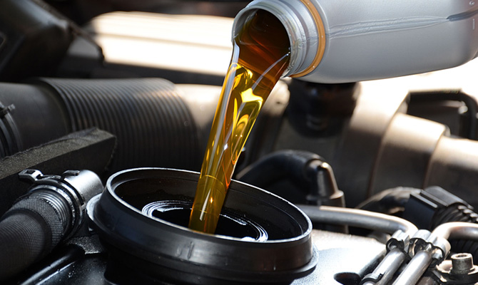
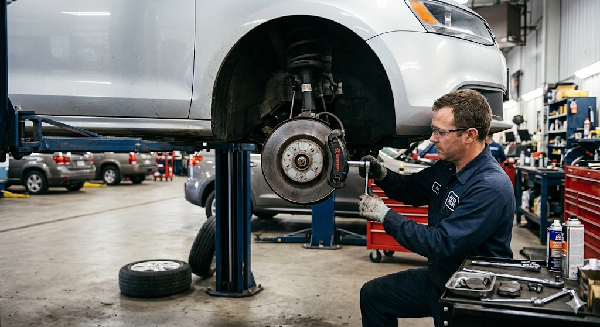
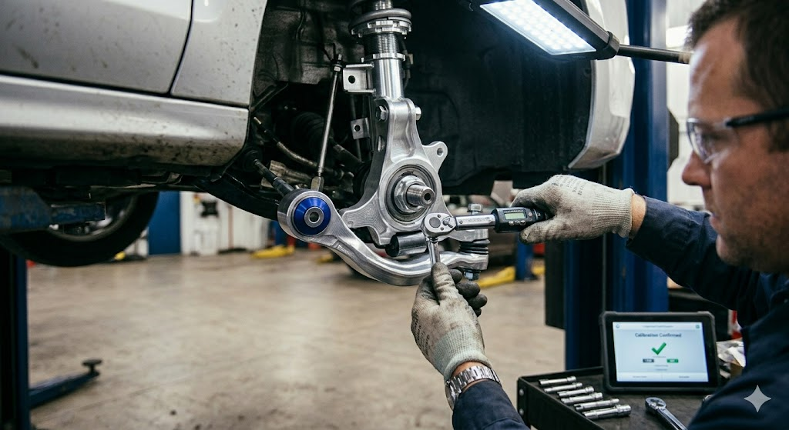
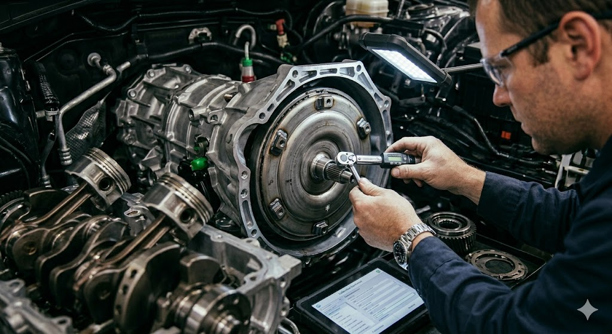

Manutenção Preventiva e Revisão
É o "check-up" do carro para evitar quebras inesperadas e garantir a segurança.
Troca de Óleo e Filtros: Substituição do lubrificante do motor, filtro de óleo, de ar, de combustível e de cabine (ar-condicionado).
Revisão de Itens de Segurança: Verificação de palhetas, lâmpadas, buzina e cintos.
Check-up de Fluidos: Verificação do nível e validade do fluido de freio, arrefecimento (radiador) e direção hidráulica.
Fundamental para a segurança ativa do veículo.
Troca de Pastilhas e Discos: Substituição quando há desgaste ou trepidação ao frear.
Reparo em Tambores e Lonas: Comum nas rodas traseiras de carros populares.
Manutenção de ABS: Diagnóstico de sensores e atuadores do sistema antitravamento.


Garante a estabilidade e o conforto ao dirigir.
Troca de Amortecedores: Além de batentes, coxins e molas.
Alinhamento e Balanceamento: Essencial para evitar o desgaste irregular dos pneus e vibrações no volante.
Substituição de Buchas e Pivôs: Eliminação de barulhos ("batidas") ao passar por buracos.
O "coração" e a "força" do automóvel.
Correia Dentada: Troca rigorosa por tempo ou quilometragem para evitar a quebra do motor.
Embreagem: Substituição do kit (disco, platô e rolamento) quando o pedal fica duro ou o carro "patina".
Limpeza de Bicos Injetores: Para melhorar o consumo e o desempenho.
Sistema de Arrefecimento: Limpeza do radiador e troca de mangueiras para evitar superaquecimento.
